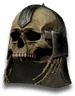
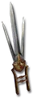

Set
Natalya's Odium
4 items, level 79, Assassin

Natalya's Totem
Grim Helm
Defense: 60-125
Required Level: 59
+135-175 Defense
+20-30 to Dexterity
+10-20 to Strength
+10-20% to All Resistances
Magic Damage Reduced By 5-10
(4 items) Adds 25-50 Damage

Natalya's Mark
Scissors Suwayyah
Damage: 40-51
Required Level: 79
+40% Increased Attack Speed
+250-350% Enhanced Weapon Damage
+1 Ignore Target's Defense
+50-100 to Maximum Damage
+200% Damage to Undead
+200% Damage to Demons
(2 items) +50 to Minimum Damage
(3 items) +100 to Maximum Damage
(4 items) +25% Deadly Strike

Natalya's Shadow
Loricated Mail
Defense: 390-496
Required Level: 73
+200-300 Defense
+X to Life (X = 1.5 x character level)
+2-3 to Shadow Disciplines
Poison Length Reduced by 50%
+50% Poison Resistance
Socketed (2-4)
(3 items) +1 to Max Shadow Masters
(4 items) +2 to Max Shadow Masters

Natalya's Soul
Mesh Boots
Defense: 37-44
Required Level: 25
+100-150 Defense
+30-40% Faster Run/Walk Speed
+20% Chance of Open Wounds
+1 to Shadow Disciplines
+15-25% Cold Resistance
+15-25% Lightning Resistance
(2 items) +10% to All Resistances
(4 items) +10% to All Resistances
Set bonuses
- 2 items: Magic Damage Reduced By 15
- 3 items: +200 Defense
- 4 items: +20% Poison Resistance
Full set
- +50% to All Resistances
- +3 to Assassin Skill Levels
- +200 Defense
- +14% Life stolen per hit
- +14% Mana stolen per hit
- +30% Physical Damage Reduction
- +1 You feel incorporeal...